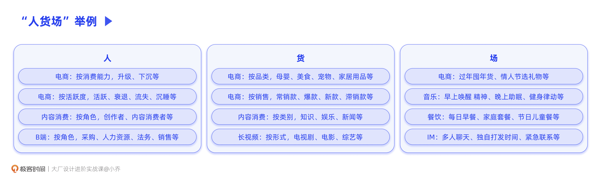
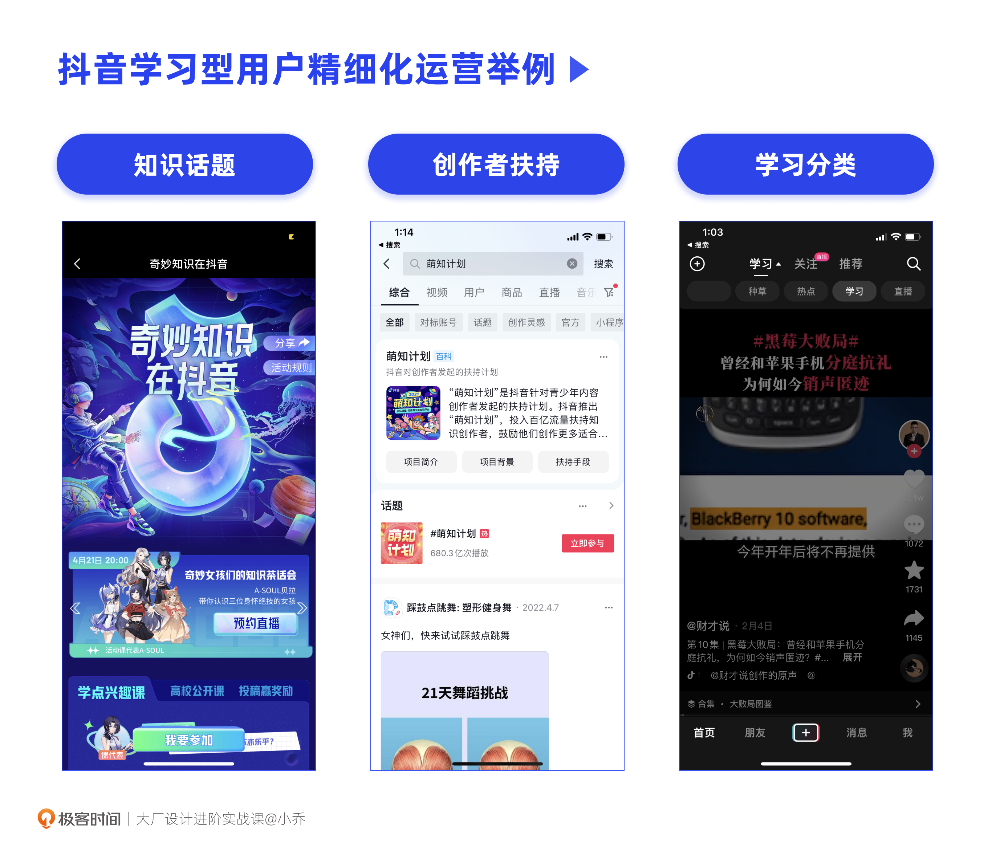
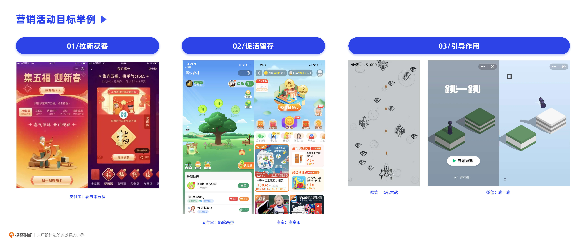
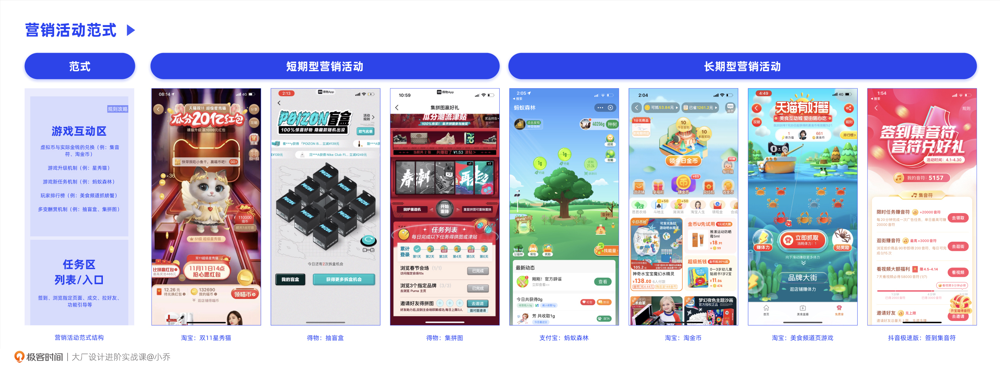
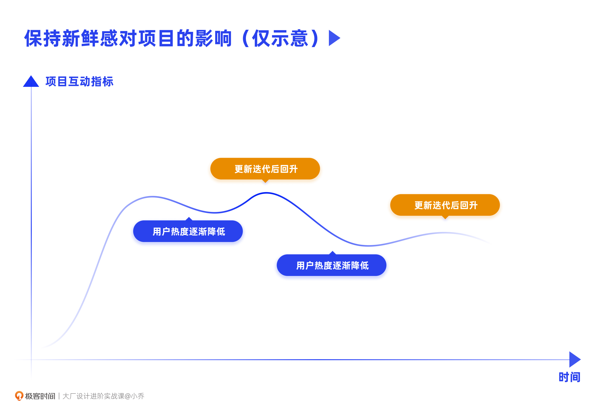
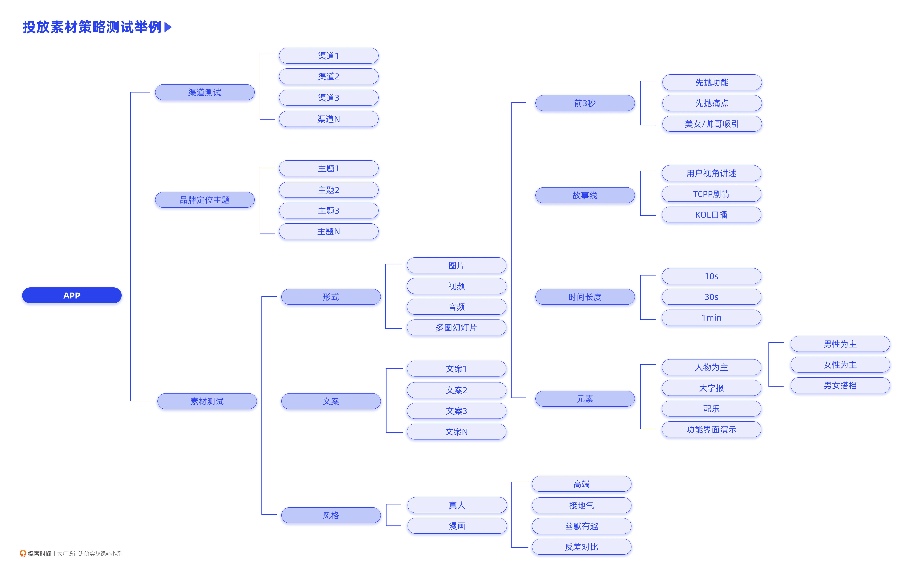
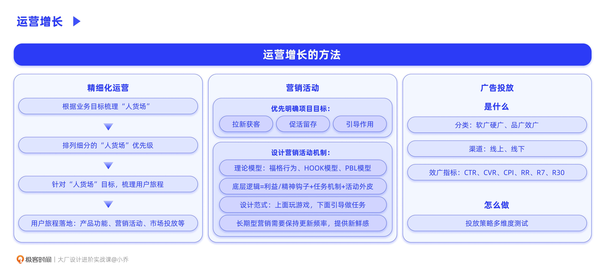

- 00 开篇词 升维思考，是设计师有效成长的第一步.md.html
- 01 业务周期：0-1-10-100-N的发展策略.md.html
- 02 商战模式：如何在商业竞争下突出重围？.md.html
- 03 市场洞察：如何找寻差异化撬动支点？.md.html
- 04 用户洞察：不懂用研的设计师不是好职场人.md.html
- 05 用户画像：是形式主义还是真的有效？.md.html
- 06 用户旅程：挖掘不同用户的核心机会点.md.html
- 07 职场晋升：看懂晋升的“游戏规则”.md.html
- 08 设计价值升级：五层进阶突破成长.md.html
- 09 基础价值 核心三原力：如何将需求转化为设计稿？.md.html
- 10 基础价值 第一性原理：从问题本质解决问题.md.html
- 11 基础价值 设计复盘：只是量化设计结果吗？.md.html
- 12 二级价值 负向网兜：如何全面发现负向问题？.md.html
- 13 二级价值 设计自驱：如何做好项目Owner？.md.html
- 14 二级价值 自驱合作：如何反内卷处理合作关系？.md.html
- 15 三级价值 增长误区：思维惯性陷阱和虚荣数据.md.html
- 16 三级价值 用户增长历程：AARRR是万能的吗？.md.html
- 17 三级价值 产品增长：如何做好产品创新？.md.html
- 18 三级价值 运营增长：如何自驱营销活动和投放？.md.html
- 19 三级价值 品牌增长 抢占心智，赢得人心红利.md.html
- 20 三级价值 增长实操：如何“步步为营”推动落地？.md.html
- 21 四级价值 L型赋能：让T型人才发挥更大价值.md.html
- 22 四级价值 “网状对比”解决共性痛点.md.html
- 23 五级价值 商业画布：设计师可以担任业务方吗？.md.html
- 24 五级价值 共创洞察：如何做好一次完善的workshop？.md.html
- 25 五级价值 领导力觉醒：写给新晋管理者.md.html
- 26 工作选择（上）：2B or 2C设计师？如何规划领域？.md.html
- 27 工作选择（下）：大厂 or 小厂？如何选择赛道？.md.html
- 28 人才地图：认知自我，成为高潜力人才.md.html
- 29 成长历程：如何从设计小白成长为团队负责人？.md.html
- 30 冰山模型：如何成为让面试官欣赏的“面霸”？.md.html
- 31 作品集指导：什么是面试官喜欢的作品集？.md.html
- 用户故事 什么是职场设计师进阶的正确姿势？.md.html
- 结束语 突破自我，成人达己.md.html
- 捐赠
18 三级价值 运营增长：如何自驱营销活动和投放？
你好，我是小乔。
上节课我们讲到产品层面想要获得增长，就需要找寻差异化竞争力，并结合自身的优势构建壁垒。而当产品本身可以一定程度满足用户需求时，我们结合运营推广，就可以起到事半功倍的作用。
运营相关的职能，也同样随着行业的发展在更新换代，逐渐细分和深入。比如，内容运营、用户运营、渠道运营、新媒体运营、社群运营、商家运营、创作者运营、行业运营、产品运营、活动运营等等。
那我们设计师在运营增长方面可以如何发力呢？我挑选了两个角度，适合设计师在其中发挥重大作用。
我们可以看到这么多细分的运营职能分工中，有一个角度在于，针对具体的用户类型、渠道类型、内容或者商品类型等方面做精细化运营，从而将普通用户逐渐转化为重度用户，我称其为“人货场”运营。
而另一个角度在于，当业务具备了核心竞争力，可以提供不错的产品和服务时，该如何传达给用户，让用户与产品互动起来，甚至帮助我们形成推广扩散呢？酒香不怕巷子深，是因为香味已经传播出去了，我们也要传播出去，让用户可以触达。针对这个角度，我们可以通过营销活动和广告投放来实现。
因此，这节课，我们将重点分析如何做好“人货场”精细化运营、营销活动和广告投放。
如何做好“人货场”运营？
“人货场”这个概念最早出现在电商行业，但我认为这个词的使用不仅限于电商行业，更适合于各行各业。我们先来分析一下“人货场”三个字的含义。
什么是“人货场”
“人”，指的就是各种类型的用户，根据不同维度的条件，用户可以被归纳为不同类型；“货”，就是不同类型的内容或商品；“场”，就是多样的场景。如下图中的举例所示：

你会发现，根据不同维度，可以拆分出多样的“人货场”。根据业务的发展重点，梳理不同的人群、内容/商品和场景，就可以针对性地满足需求，完成精细化运营。精细化运营，并不是指运营职能，而是针对细分的人货场去深度经营的意思，手段包含了产品设计、运营推广等各方面。
如何做好“人货场”
想做好“人货场”的设计，第一步就是找到我们的产品有哪些用户类型、内容类型和使用场景。第二步，就是针对这些“人货场”，按优先级投入资源满足需求。通过我们之前讲过的调研分析方法，比如用户画像、用户访谈、影随调研、数据分析等，相信你一定可以完成梳理，得出理想的解决方案。
首先，我们来看一个经典案例，在多个商业课程中，都被高频提到。
有家餐饮店的明星产品是奶昔，店主想要进一步提升生意，于是就想着是不是应该把奶昔做得浓一点，加一些巧克力装饰，再配合打折促销。你觉得店主的做法能够达到预期吗？
事实上，这样的做法并没有带来明显的利润提升。这其实也验证了我们在之前课程中学习过的“惯性思维误区”，在没有摸清楚关键问题时，就想当然地提出假设。
于是，他们只好找了咨询公司做战略优化。研究员在店内蹲点观察，记录了顾客的购买时间、陪同情况、就餐方式以及附加食品等，同时也对顾客进行了访谈，最终发现了两类用户的行为需求。
他们发现，在一天中，超过50%的顾客都是早上购买，并且只买奶昔，急匆匆地打包带走。因为这些用户需要开车去工作，一手握方向盘，一手拿食物。如果买其他类似百吉饼的食物，会把手弄脏，但是奶昔不会弄脏手，也不影响安全，甚至可以让无聊的车程变得有趣一些。那为什么不喝饮料呢？因为饮料喝了会饿，但奶昔比饮料饱腹。因此他们的需求是：开车时干净的、可以解闷的、同时有一定饱腹作用的食品。
而另一部分顾客，通常在傍晚或周末，买给他们的孩子。这些家长想要在对孩子说了一整天的“不”之后，买个奶昔，显示自己的通情达理。但是孩子们通常无法完成这份盛情款待，浓稠的奶昔对孩子们来说，吸吮困难，因此往往只吃了一半就丢弃了。因此他们的需求是：稀一点的、少量的、让孩子满意的食品。
那么，如果你是这个餐饮店负责增长的设计师，会如何用设计的力量推动增长呢？
一方面，针对开车上班的用户，我们可以优化迭代奶昔产品，在针对上班族的奶昔产品中，加上果粒，让用户在车上不仅可以用奶昔打发时间，还因为果粒，使车程更有趣，实现了体验爽点。
另一方面，针对家长用户，我们非但不该像店主那样把奶昔做浓，还应该把奶昔调稀，让孩子们容易吸吮，并且把容量改成一半，配上童趣的杯子包装设计。
因此，我们在做任何增长项目时，都不该无视用户和需求，而应该针对细分的“人货场”，进行精细化运营设计。再从产品功能、营销活动、团队架构、市场投放等全方位落实，按优先级优化。
比如，抖音要改变纯娱乐定位，同时希望吸引更多用户使用，就可以从尚未覆盖的用户画像、年龄层、地区等用户类型入手，梳理他们的需求。
比如有一类用户是学习型，希望通过碎片时间吸收知识，不想看到跳舞的小姐姐。此时从内容运营角度，就可以引入知识消费内容，发起更多知识类挑战；从创作者角度，需要给予创作者更多的流量扶持，让他们愿意入驻，形成我们之前讲过的UGC增长Loop；从产品功能角度，就可以把学习模块或频道页单独规划。抖音也确实如下图所示，从多角度做了许多运营动作。

你看，在这么多机会点里面，很少有我们设计师无法发挥价值的地方。机会点无处不在，可以通过我们之前讲过的用户旅程地图，将产品功能、触达方式、营销活动等全方位的机会点统筹梳理，按优先级落地。
如何做好营销活动？
在正式讲解之前，我们需要先抛弃公司的职能设置对设计师产生限制的刻板认知。因为不论在什么样的环境下，有职能长板同时综合能力强的员工，永远是稀缺资源。往前迈一步，总会有更大的发挥空间。设计师可以做的，远远不止活动KV和活动界面。
当然，我们并不是要替代运营和产品经理的工作，而是去主动规划、提出机会点，带动相关的运营和产品同学一起发起项目。明白了这一点，设计师就不再是等着别人规划后只能画图的角色了。其实大部分时候，大家抱怨设计师被当作美工，是我们自己把自己放在了下游的状态。
那在三级价值的课程里，我们就重点探讨由设计师洞察机会点、发起营销项目、推动业务增长的方法了。
优先明确项目目标
许多设计同学一提到运营活动，第一反应就是构想KV风格和活动界面，要风格强烈、要情感化、要有趣……而忽略了项目本身的目标。其实当我们要发起运营活动时，首先要明确的是项目价值，而不是直接上手画界面。
大部分运营活动，核心目标都是围绕拉新获客、促活留存、引导作用来展开的。根据不同的项目目标，我们再拆解为具体的活动机制和风格样式。
目标1：拉新获客
通过分享裂变和社交互助的活动机制，起到拉新获客的作用。支付宝的春节集五福，就是为了拉新，拉“高龄用户”的新。许多高龄用户会选择微信支付，因为这是他们最熟悉的产品，红包转账也很方便。而通过集五福，就可以促进中青年用户为家中的老年用户注册支付宝，互相交换福字，参加集五福活动。这样的运营活动通常偏向几天到几周的短期形式。
目标2：促活留存
通过利益点或游戏吸引力，让用户养成习惯，达到促活留存的作用。支付宝的蚂蚁森林、淘宝的淘金币、淘宝人生，都是为了促活留存。用户因为一些利益钩子或本身对这个游戏的兴趣，每天都会登录一下，甚至成为了长期的日常习惯。
目标3：引导作用
通过简易有趣的游戏，形成现象级传播，有效引导近期主推的功能。微信曾经在刚上线小程序功能时，上线了“跳一跳”的游戏，形成了广泛传播。你知道这个游戏的作用是什么吗？是为了教会用户，向下划动界面，就会进入小程序入口，是不是非常聪明？这样的运营活动通常偏向几个月或几年的长期形式。

设计营销活动机制
当我们明确项目目标后，该如何设计营销活动的机制呢？网络上有很多营销和培养用户习惯的理论模型，虽然不是我们这节课的重点，但不妨简单了解下。
福格行为：- - 福格行为模型即B=MAP（之前是B=MAT），B是行为Behavior，M是动机Motivation，P是能力Prompt。简单来说，就是当用户具备充足的动机和完成该任务的能力时，通过提示来触发用户行动。举个例子，用户有追求快乐和逃避痛苦的动机，用户有下载抖音和打开抖音的能力，那抖音发个能吸引到用户的推送消息，就能让用户放下手中的工作去刷短视频。- - HOOK模型：- - 由触发、行动、酬赏和投入四步组成。通过内在或外在动机的触发，引导用户行动，通过多变的酬赏让用户保持猎奇和互动粘性，引导用户投入精神或物质成本，使其不愿意放弃，从而又进一步循环这四个步骤。为什么要用多变的酬赏呢？如果我们做个实验，有两个笼子分别养着鸽子，笼子A的鸽子，啄一下按钮就能掉下来一颗粮食，笼子B的鸽子，啄一下按钮不确定哪一次会掉粮食，实验证明笼子B的鸽子会一直啄按钮。- - PBL模型：- - 通过积分、勋章、排行榜，来刺激用户不断升级和竞争，通常用于游戏设计。“蚂蚁森林”、“微信运动”和“抖音直播打赏”的分数、级别、排行榜，其实都充分运用了PBL机制。- 也许你看完这些理论模型后，已经可以分析自己的营销活动了。比如一个活动，金钱动力很足，但用户点击进来没有参与就流失了，那很可能是因为游戏门槛太高，用福格模型解释，就是用户有“动机”，没“能力”。如果一个活动入口的浏览量很高，点击进入的人却很少，用HOOK模型解释，就是内在外在的动机都不足，难以“触发”。
但也有可能，在看完这些理论后我们依然没有思路。别担心，我为你整理了营销活动设计范式，我们一起来看一下可以实操落地的设计思路。
通过观察市场上的运营活动，我们会发现，去除所有的样式外皮，大部分营销玩法的底层逻辑，都是利用钩子来引诱消费者参与，运用上瘾机制让用户反复参与，从而完成各种商业目标的转化。
让用户愿意来参与活动的钩子，通常分为两大类。一类是物质激励型，另一种是精神激励型。
物质激励就是抽奖或折扣券。天猫在2021年618大促中做了“星秀猫”的营销活动，让用户可以云养猫，去除游戏外皮，本质其实是瓜分奖金；各大平台的抽盲盒活动，刺激用户不断做任务换取抽盲盒的机会，本质其实是抽奖的逻辑。这些都是物质激励。
而精神激励，往往是游戏本身十分有趣，可以将游戏“正当化”，或是激发用户的“攀比心理”。蚂蚁森林就是一种“正当化”玩游戏的方式，通过简单的操作，就可以为公益事业奉献力量。同时，它还有好友排行榜，这又进一步促进了用户的攀比心理。微信的飞机大战通过每周好友排名，造成了现象级传播，也是运用了这个逻辑。
当有了利益或精神激励的钩子，也有了针对项目目标设计的分享、互换、逛页面、交易等任务，此时我们如果再加上符合用户喜好的外皮包装，就初步完成了一个营销活动设计。
我们用公式来表示：营销设计的底层逻辑=利益/精神钩子+任务机制+活动外皮
目前市面上的营销活动，往往是既有物质激励，又有精神激励的。并且随着营销活动的日渐成熟，运营活动框架已经形成了范式，通常上面一半是游戏，而下面一半是任务列表或任务入口。如下图所示，支付宝蚂蚁森林、天猫双11游戏、抖音春节活动、拼多多签到、淘宝淘金币等，都符合范式结构。这样的效果是，用户一边在游戏中获得快乐或物质奖励，一边又可以帮助企业完成本次营销活动的项目目标。

营销活动根据上线时间，分为仅需要上线几周的短期型和持续上线几年的长期型。通常长期型带有促活留存的项目目标，需要持续监测数据表现，并保持更新机制的频率。互联网产品的功能总在快速地更新迭代，而运营活动更是需要高频地推陈出新，为用户提供有效的新鲜感。
新鲜感 = 提供的产品和服务 - 消费者认知和期待值
没有常青的游戏，只有不断创新的营销活动。长期型营销活动，当属蚂蚁森林最为成功，有正向的立足点和较为长青的用户粘度。起初在2016年，蚂蚁森林引导用户通过步行、乘坐公共交通来完成能量的积累和收集。随后，用户可以邀请好友并互相偷取能量，愉悦爽感和愤怒叫屈都会增加用户的社交价值。之后，用户通过种树，真的可以获得沙棘汁，体会了一把“把娃养大，娃有出息”的快感。因此，不断地迭代，才能让用户保持新鲜感，愿意持续留存。

在实操时，不管长期还是短期的营销活动，都可以采用范式结构。如果在游戏任务中还可以运用我们之前课程讲过的Growth Loops，效果将会指数级增长。比如天猫双11盖楼，通过用户的主动裂变来拉新促活。而长期型营销活动，需要不断更新迭代，通过每个阶段可以吸引用户的方式，在活动KV、游戏任务、奖酬等各个方面，保持新鲜感。
如何做好广告投放？
运营活动可以在不同时期加持业务目标，带来阶段性的显著增长，或长期的促活留存；而广告投放，在无法运用病毒式裂变、补贴增长和UGC内容传播时，往往是最高效的获客手段。
通常企业内会有独立的UG部门，承接各个业务提出的用户增长需求。UG中台会以低成本、高效率为目标，选择合适的投放渠道，制作广告素材。但往往由于中台的同学无法像业务团队那样了解业务，所以建议业务部门的设计团队，可以和UG中台的同学共同决策素材策略，并做好素材把控的工作。
如何得出投放策略呢？其实和我们做产品是类似的逻辑。核心指标是曝光量、下载转化、CPI、次日留存、7日留存、30日留存。
首先，调研得出目标市场用户高频接触的渠道，比如国内是抖音、腾讯广点通等，海外相对发达的国家是Facebook、YouTube、TikTok等，海外相对落后的国家是FM、电视、纸媒、线下广告板等。假设我们产品的一些核心功能、节庆活动、利益钩子可以引起用户的关注，通过低成本的试验来测试不同素材的效果，经过数据对比后就可以知道什么主题可以使CPI最低、怎样的表达方式吸引用户下载等等。
举个例子，我团队曾经负责过一款海外社交产品。我们尝试了图片、视频、音频，尝试了不同的文案，尝试了高端调性和接地气风格，有直接演示App功能的方式，也有让用户来讲述产品优点的story telling模式，有试过男生为主和女生为主，也试过男女搭档的方式，最终在数据对比中，得出了素材测试结论。比如目标市场的用户最关注视频开始的前三秒，用户喜欢story telling的方式，无论男女用户都容易被美女封面的素材吸引点击等。
我将过往做投放素材测试的维度，整理在下图中，你可以根据自己项目的情况，制定更多维度的策略规划和测试。

今日小结
今天，我们一起探讨了如何根据不同的用户、内容或商品、场景类型，做好精细化运营，并将我们的产品和服务通过营销活动和广告投放，进行对外传播，达到拉新、促活和引导功能的作用。仅仅依靠产品的自然增长，在激烈且窗口期短暂的商业环境下，是十分困难的，运营推广可以让效率指数级增长。

今天的小结，除了运营增长的具体方法外，我们也聊聊合作的能力。
需要注意的是，不管是推动运营活动立项，还是发起广告投放项目，都伴随着成本和ROI的计算。比如许多游戏化运营活动，是需要对接SDK的，游戏引擎由外包公司提供，此时就会产生成本；在活动机制中，用户参与互动，往往伴随着金币、奖品等奖励，这些也都涉及到成本开支；在广告投放中，许多App都是每周百万以上的开支，在立项和申请预算时，需要结合用户的LTV，算出ROI。
算数往往不是设计师擅长的事情，我们可以拉动财务、数据、运营同学加入我们，让专业的人做专业的事，共同讨论和推动落地。实现三级价值，自驱推动增长项目，并不是让设计师去“卷”其他职能，而是充分发挥自我所能，由被动承接转变为主动提出和推动。
我们始终要记住的是，从来没有公司规定过，设计师只能停留在下游。想要成为更有价值和话语权的角色，就需要更强的规划与推动能力，和更显著的项目影响力。
在下节课中，我们将一起探讨如何制定品牌策略，在恰当的线上、线下渠道进行品牌透传，在人口红利逐渐萎缩，人心红利逐渐放大的当今互联网行业，抢占用户心智，实现增长。
互动时刻
回顾你过往的工作，曾经负责的运营活动是否在上线一段时间后，数据就下滑了呢？你是如何优化解决的呢？你负责过的营销活动中，形成了现象级传播吗？
欢迎把你的经历和思考在留言区分享出来，与我和其他同学一起探讨。我们建立了一个读者交流群，欢迎你的加入！如果你觉得有所收获，也欢迎把文章分享给你的朋友一起学习。我们下节课见。
© 2019 - 2023 Liangliang Lee. Powered by gin and hexo-theme-book.